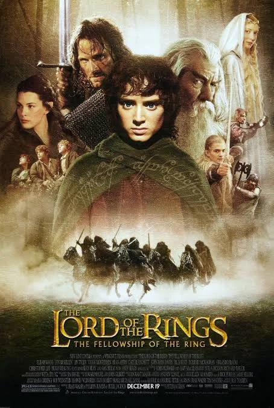

Cine · Fantasía épica
El señor de los anillos
La referencia obligada de la épica: tres películas que se toman su tiempo y aun así no sobra un plano. De la Comarca a la caída de Boromir, me enseñó que un mundo inventado solo funciona si te lo crees de verdad. La trilogía entera sigue siendo mi vara para medir el cine grande.
Voltear